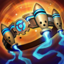
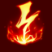

Maga
/
Soporte
Dificultad Baja
HABILIDADES


PASIVA • PIROMANÍA
Luego de lanzar 4 hechizos, el próximo hechizo ofensivo de Annie aturdirá al objetivo.
1 • DESINTEGRAR
Annie arroja una bola de fuego impregnada de maná para infligir daño en una zona pequeña y restaurar el costo de maná y la mitad de su enfriamiento si destruye al objetivo.
2 • INCINERAR
Annie lanza un cono de fuego que inflige daño a todos los enemigos dentro del área.
3 • ESCUDO FUNDIDO
Annie escuda a Tibbers o a un campeón aliado, lo que absorbe daño. Los enemigos que ataquen el escudo recibirán daño.
DEFINITIVA • INVOCAR: TIBBERS
Annie da vida a su oso Tibbers, que daña a todas las unidades de la zona. Tibbers puede atacar y quemar a los enemigos adyacentes.
CONFIGURACIÓN
OBJETOS
-

Vara de las Edades
2800+250 Vida Máxima
+60 Poder de Habilidad
+300 Maná Máximo
ETERNIDAD: Restaura maná igual al 15% del daño recibido de campeones. Gastar maná regenera Vida igual al 20% del costo de maná. Tiene un límite de 25 de Vida por cada lanzamiento.
VETERANO: Cada acumulación otorga 20 de Vida, 10 de Maná y 6 de Poder de Habilidad. Se acumula con una tasa de 1 cada 30 seg. Tiene un máx. de 10 acumulaciones y otorga 200 de Vida, 100 de Maná y 60 de Poder de Habilidad. -

Sombrero Mortífero de Rabadon
3500+120 Poder de Habilidad
DAÑO EXCESIVO: Aumenta el Poder de Habilidad en un 40%.
-

Orbe del Infinito
3150+200 Vida Máxima
+60 Poder de Habilidad
DESTINO: +5% de Velocidad de Movimiento.
BALANCE: +15% de Penetración de Magia.
MUERTE INEVITABLE: Las habilidades y los ataques potenciados infligen golpes críticos con un 20% de daño adicional contra enemigos por debajo del 35% de Vida. -

Báculo del Vacío
2800+70 Poder de Habilidad
DISOLVER: +40% de Penetración de Magia.
-

Morellonomicón
3000+300 Vida Máxima
+70 Poder de Habilidad
PREDICADOR DEL FIN: +15 de Penetración de Magia.
AFLICCIÓN: Infligir daño mágico aplica un 40% de Heridas Graves a campeones enemigos por 3 seg. Si el objetivo está por debajo del 50% de Vida, este efecto aumenta a un 60% de Heridas Graves.
Heridas Graves reduce la efectividad de las curaciones y efectos regenerativos. -

Botas Jonias de la Lucidez
1000CALZADO: +40 de Velocidad de Movimiento.
LUCIDEZ: +15 de Aceleración de Habilidad.
INVOCADO: Reduce los enfriamientos de hechizos un 15%.
CARRERA (ACTIVA): Aumenta la Velocidad de Movimiento un 15% durante 3 seg. Infligir o recibir daño de campeones desactiva los efectos de Carrera. (60 seg de enfriamiento). -

Encantamiento de Protocinturón
500PROTOCINTURÓN (ACTIVA): Te desplazas hacia adelante y liberas misiles en un cono que infligen 75-145 de daño mágico. Si más de un misil alcanza campeones o monstruos, los misiles adicionales solo infligen un 10% de daño. (60 seg de enfriamiento).
RUNAS Y HECHIZOS
-

Electrocutar
Alcanzar a un campeón con 3 ataques o habilidades separados dentro de 3 seg inflige daño adaptable adicional.
DAÑO: 30-184 (basado en nivel) (+40% adicional AD) (+25% AP).
ENFRIAMIENTO: 25 seg. -

Brutalidad
Obtienes 7 de Daño de Ataque y un 2% de Penetración de Armadura o 14 de Poder de Habilidad y un 2% de Penetración de Magia (adaptable).
-

Segundo Aire
Gana 5 de Vida cada 5 seg.
Después de recibir daño de un campeón enemigo, regenera 3(+1.5% de tu Vida faltante) a lo largo de los próximos 10 seg. Este efecto se duplica para campeones cuerpo a cuerpo. -

Dulces Frutos
Aumenta la curación de Frutamiel en un 25%. Cada vez que tú o un aliado cercano coma una Frutamiel, obtienes 20 de oro.
-

Ignición
ENFRIAMIENTO: 90 seg.
Prende fuego al campeón enemigo objetivo, lo que inflige 60 de daño verdadero (60-410 basado en nivel) durante 5 seg y le aplica un 60% de Heridas Graves mientras dure el efecto. -

Destello
ENFRIAMIENTO: 150 seg.
Te teletransportas una distancia corta hacia delante o hacia la dirección objetivo.
CÓMO JUGAR ANNIE
Annie es una maga del carril central. Con Annie, lo más importante que debes controlar es cuántas acumulaciones tienes en tu pasiva (piromanía). Esto se muestra justo debajo de tu barra de maná. Cuando Annie obtiene su habilidad definitiva (Tibbers), es mejor esperar hasta que tengas 4 acumulaciones en tu pasiva para que puedas usar el área de efecto para aturdir a varios enemigos. Esto es asombroso durante las peleas en equipo o cuando se intenta eliminar a un enemigo que camina por sí mismo.